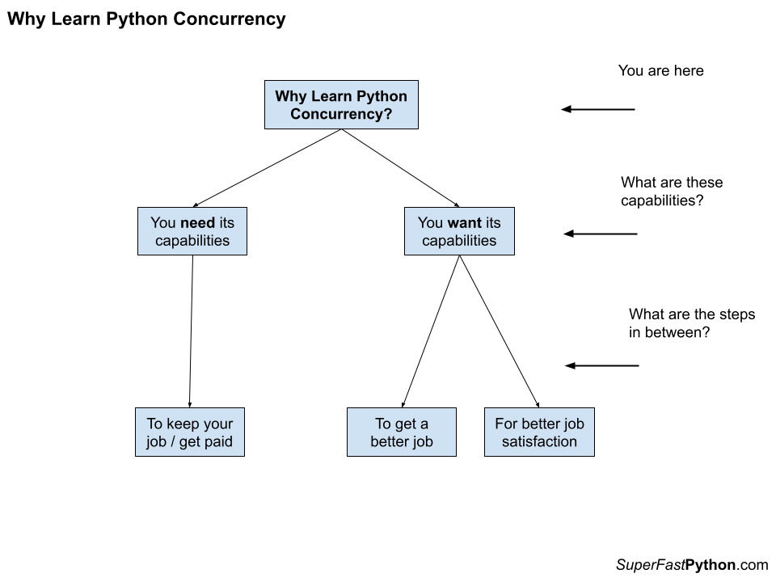
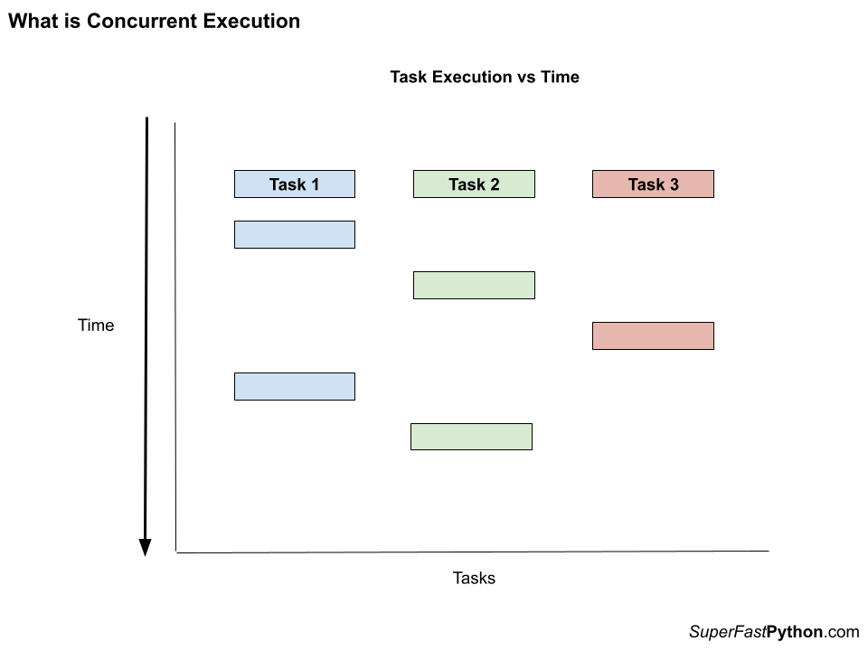
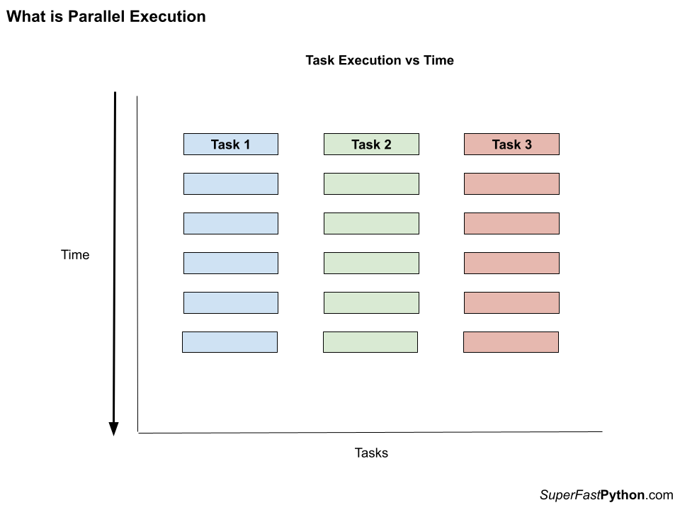
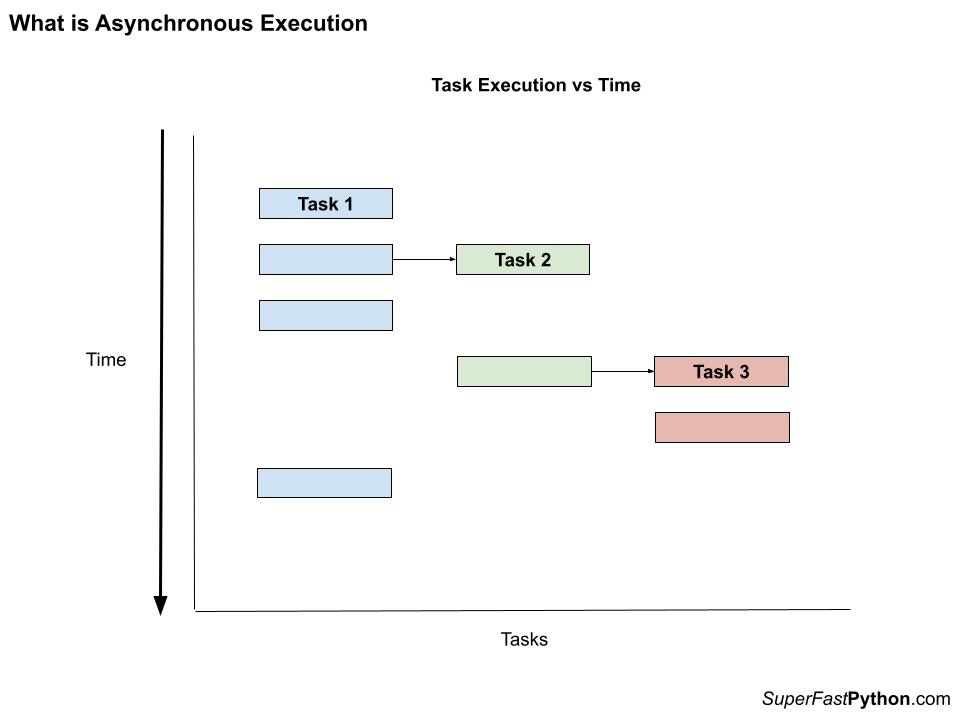
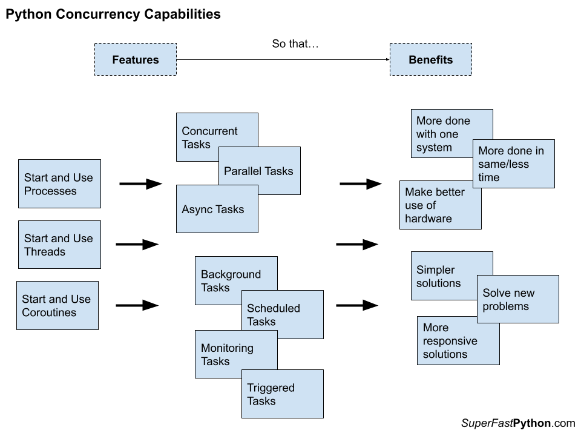
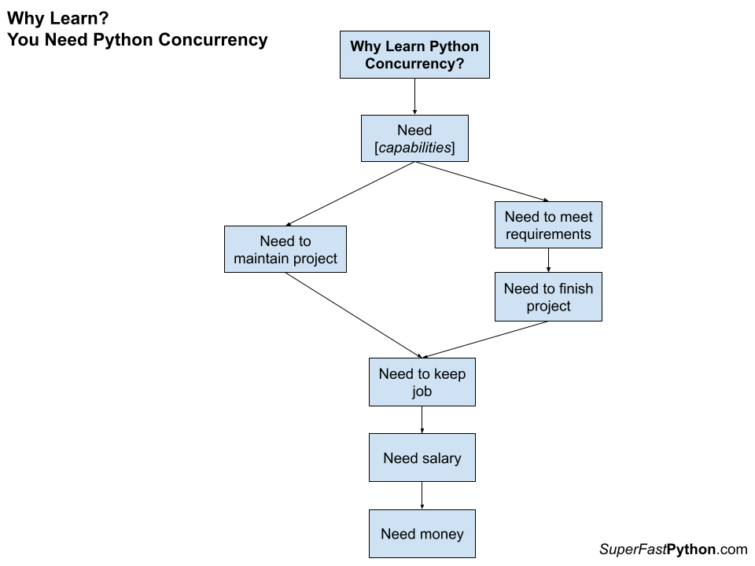
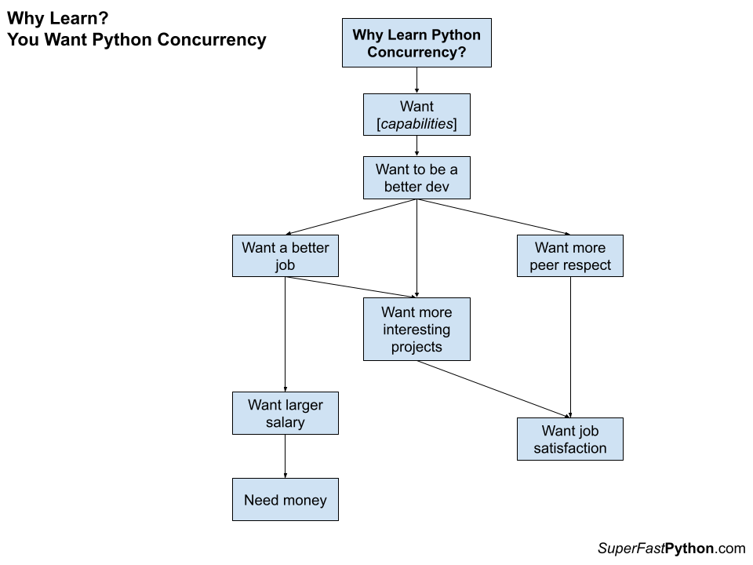
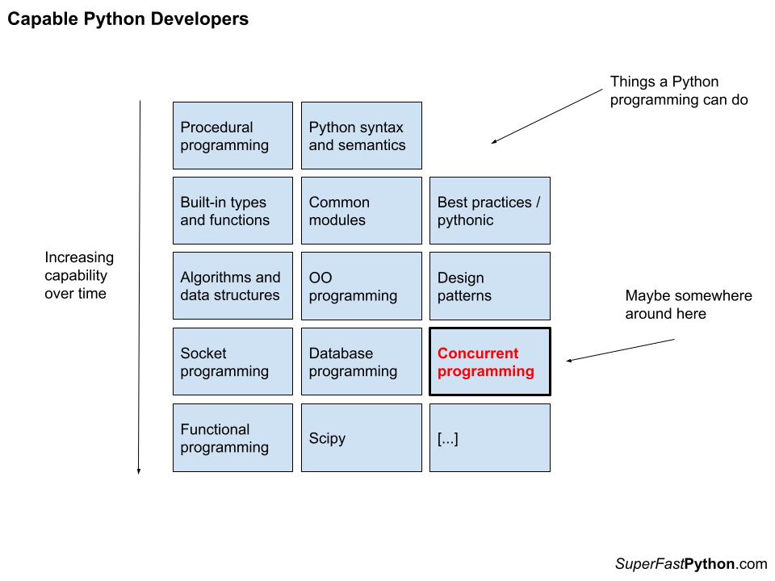

Why Learn Python Concurrency
Why Learn Python Concurrency
Have you thought about Python concurrency?
Perhaps you see peers talk about threads vs processes, asyncio, and the GIL.
Modern systems have many CPU cores. Modern programs need to scale. Perhaps you've had the thought that your scripts and programs don't make full use of your hardware.
Perhaps you need to learn more about Python concurrency.
I created this guide for you. Welcome!
- You will discover what is Python concurrency with a brief tour.
- You will then discover why you may need or want to learn Python concurrency.
- You will finally then discover why you probably need to learn Python concurrency, and why all Python developers need to learn it (this may get me into trouble).
Let’s dive in.
Why Learn Python Concurrency?
The first question to answer is "why".
- Before you choose a module or library for concurrency.
- Before you learn a concurrency API or write code.
- Before getting a book, taking a course, or skimming tutorials.
It's first because if you can't develop a robust answer, then you can move on. It makes the other questions less relevant, perhaps irrelevant.
There are two main reasons that you would learn Python concurrency, they are:
- You want to learn it.
- You need to learn it.
You want to learn Python concurrency ultimately to get a better job or for better job satisfaction.
You need to learn Python concurrency ultimately to keep your job and get paid.
There are many steps between these desires and the outcomes.
The diagram below attempts to capture these two rationales.

If you need or want to learn Python concurrency, at least you know where you stand. It can be helpful to sharpen up this need with more detail and give you the push to get started.
The bigger issue is that most (all!) Python developers need to learn Python concurrency, and don't yet know this fact.
Maybe you're curious about Python threads, processes, and/or coroutines, but you don't really want to learn about them, at least not yet.
My hope is that this guide will help nudge you to change your mind.
But before we dive into these reasons, let's take a brief tour of what exactly is Python concurrency.
What is Python Concurrency
Python concurrency refers to a suite of capabilities provided by specific Python modules and in some cases (coroutines) the Python language itself.
The capabilities are not provided by other means and have to do with executing code simultaneously, asynchronously, and/or in parallel.
These capabilities are implemented in specific Python modules in the standard library such as the "threading", "multiprocessing", and "asyncio" modules.
Let's take a quick tour of the capabilities and implementation details of Python concurrency before we dive into why we should learn them.
Python Concurrency Capabilities
Python concurrency unlocks capabilities not provided by other programming constructs, or at least, not as easily.
Concurrency refers to a different type of programming. It is another paradigm that is orthogonal or overlayed on top of our typical programming paradigms such as procedural programming, functional programming, or object-oriented programming, all of which we can use in Python.
Concurrency, broadly conceived, bring three new capabilities, they are:
- Concurrent execution.
- Parallel execution.
- Asynchronous execution.
They are different but related.
Concurrent Execution
Concurrent execution is a pre-condition for parallel and asynchronous execution.
Concurrent means that pieces of a program can run out of order, or overlap in some way.
Just like functions allow a long program to be split into discrete pieces and reused. An atom of concurrent execution, like a lambda, function, or method, can be executed at some potentially overlapping time with another atom of concurrent execution.
It does not mean that the execution “will” be out of order or will overlap with each other, only that it “can” be.
For example, we may read from 3 files concurrently. There is a prescription that the tasks are separate and that each can happen at an arbitrary time, although there are many ways this could be achieved.
The files could be read a little bit each in a round-robin until completed. They could each be read in parallel (discussed next), they could be read asynchronously and the caller may check in on the results later.
Concurrency: The capability of having more than one computation in progress at the same time. These computations may be on separate cores or they may be sharing a single core by being swapped in and out by the operating system at intervals.
-- Page 266, The Art of Concurrency, 2009.
Concurrent execution facilitates "concurrency" implementation details, just like subroutines facilitate reuse. Details like pre-emptive multitasking, cooperative multitasking, and parallel execution.
Let's look at a diagram that might make concurrent execution clearer.

The diagram shows the concurrent execution of three tasks. Time executing the tasks starts at the top of the chart and travels down, one step at a time.
We can see that in this case, although all three tasks are executed concurrently, only one task is actually executed at a time. Nevertheless, they all make progress.
Parallel Execution
Parallel execution means being executed at the same time.
It means simultaneous execution of the atoms of concurrent execution, described previously.
If concurrent execution is the ability, then parallel execution is a means.
As such, parallel execution is typically a function of the parallelism of the underlying hardware. This may mean multiple GPUs or CPUs, multiple cores per CPU, multiple machines, and so on.
Parallel: Executing more than one computation at the same time. These computations must be on separate cores to be running in parallel.
-- Page 270, The Art of Concurrency, 2009.
Parallelism is often what is meant when describing python concurrency casually, e.g. that we want things to happen at the same time.
In practice, parallelism allows the full or fuller extent of the underlying hardware to be utilized. This means we may be able to run on all CPUs or all cores, instead of one.
It may mean that a series of sequential tasks can be completed in the time it takes to complete one task, offering a speed-up and in turn scalability of a program.
Let's look at a diagram that might make parallel execution clearer.

The diagram shows the parallel execution of three tasks. Time executing the tasks starts at the top of the chart and travels down, one step at a time.
We can see that all three tasks are started at the same time, concurrently. In this case, we can see that each task is able to execute each time step, allowing all tasks to make progress simultaneously.
Asynchronous Execution
Asynchronous execution means not at the same time, e.g. at some later time.
It may be in parallel. It may be when there are sufficient resources. It may be when there's time. It may be when we choose to suspend and allow it.
Asynchronous: Separate execution streams that can run concurrently in any order relative to each other are asynchronous.
-- Page 265, The Art of Concurrency, 2009.
Asynchronous execution facilitates a new programming style, called asynchronous programming.
Tasks and function calls can be dispatched and results handled later, as required. External events can trigger the execution of functions as required. In turn, this can require far fewer resources, and in turn, supports significantly more concurrent tasks.
This approach is most common when using non-blocking I/O.
Let's look at a diagram that might make asynchronous execution clearer.

The diagram shows the asynchronous execution of three tasks. Time executing the tasks starts at the top of the chart and travels down, one step at a time.
One task is started and then schedules a second task. The first task continues for a moment. The second task is then given an opportunity to execute and schedules the third task. The third task then runs and completes. The second task completes and the first task runs a moment longer.
All three tasks are executed concurrently, although in a different manner from what we have seen previously.
Benefits of Python Concurrency
The higher-level features or capabilities of concurrent, parallel, and asynchronous execution allow specific benefits, such as:
- Making better use of computer hardware.
- More can be done with the same system.
- More can be done in less time.
When we think of concurrency, we think of the outcomes like those listed above.
- We want to run Python code on all CPU cores.
- We want tasks to run in parallel, rather than sequentially.
- We want to do things all at once as fast as possible.
There are also other less tangible benefits, such as:
- Simpler programming solutions (e.g. less code).
- More responsive solutions.
- Solve new problems.
This last point about solving new problems is a big one.
For example, concurrency allows programs to do things they could not achieve otherwise, at least not without significant efforts, such as:
- Execute background tasks.
- Schedule tasks for the future.
- Monitoring tasks
- Triggered tasks.
These are the lower-level benefits we can begin using directly when we bring concurrency into our Python programming projects.
This was a very quick tour of the benefits of Python concurrency, really concurrency more generally.
The below diagram makes a clumsy attempt at summarizing these capabilities and benefits or outcomes. Does it help?

Python Concurrency in the Standard Library
Python concurrency is available in Python via three main modules in the standard library, they are:
- The threading module
- The multiprocessing module
- The asyncio module
There are other modules that complement these, but these three modules are central to Python's capabilities for concurrency.
The threading module allows the creation and management of operating system threads using Python objects and functions. Threads are commonly used for IO-bound tasks such as reading and writing from sockets, files, and devices.
The multiprocessing module allows us to create and manage operating system-level processes. Processes are commonly used for CPU-bound tasks.
The asyncio module allows us to create and manage software-level coroutines. Coroutines are used mostly for non-blocking subprocess and socket I/O, although can be used more generally for asynchronous programming with IO-bound and CPU-bound activities by dispatching tasks to threads and processes.
There are also many third-party libraries that replace, augment, and add functionality on top of these modules.
Perhaps the most commonly and/or widely used (ranked based on the number of GitHub stars) include:
- ray: a framework for scaling Python applications.
- tornado: Python web framework and asynchronous networking library.
- celery: Distributed task queue.
- sanic: Async Python web server and framework.
- aiohttp: Asynchronous HTTP client/server framework for asyncio
- dask: Parallel computing with task scheduling.
- uvloop: Ultra fast asyncio event loop.
Now that we have some idea of what Python concurrency is, let's consider why we should learn it.
You Need or Want Python Concurrency
There is an easy way to think about Python concurrency.
You either need to learn it, or you want to learn it.
I would, and will, argue that all Python developers need to learn it. There are things you can do with Python concurrency that you cannot do or cannot do easily without it.
Nevertheless, the "need" vs "want" breakdown is a great place to start.
From a high level, you need to learn Python concurrency or learn it better because of your job, e.g. the salary that pays your bills.
You may want to learn Python concurrency for many reasons, although chiefly to improve your job satisfaction as a Python developer. This pathway may be less clear on the surface, but we will dig into it.
- Need Python Concurrency: for your job (to get paid).
- Want Python Concurrency: improve job satisfaction.
Next, we will take a closer look at each of these aspects.
Need Python Concurrency
You need to learn Python concurrency now because of your job.
There are perhaps two main reasons this may be the case:
- You are starting a new project and Python concurrency provides a capability that meets a requirement of the project.
- You are maintaining a project that makes use of Python concurrency.
In these cases, learning Python concurrency is not really an option. It is a need, not a want.
You must learn it in order to do your job, and get paid.
The below diagram makes a clumsy attempt at summarizing this argument. Does it help?

If you are in this situation, send me a message. I'd love to hear more.
Let's take a closer look at each.
Meet Requirements for New Project
You are starting or joining a new Python project.
This may be entirely new software (greenfield) or adding major functionalities to existing software (brownfield).
The project has requirements and one or more aligned with the capabilities of Python concurrency.
For example, maybe it is a high-level capability of Python concurrency, such as:
- You need to meet a performance requirement.
- You need to meet a scalability requirement.
- You need to meet a responsiveness requirement.
- And so on.
Perhaps a lead engineer or architect has pre-chosen an approach that involves concurrency.
This might be the use of threads, processes, or coroutines.
It may be a pre-chosen programming paradigm such as asynchronous programming, actor-based programming, and so on.
Python concurrency should not just be added to a project, it should be added to meet a specific user or stakeholder requirement. Nevertheless, sometimes this is not the case.
Worse still, we may not know about requirements until after the software is written.
For example:
- The software is too slow.
- The software does not make full use of the hardware.
- And so on.
Suddenly, we have a new non-functional requirement that can only be reasonably met by using concurrency methods.
Other times, the project lead or a stakeholder "just wants to use it". A less defensible requirement, but a requirement nonetheless.
Fair enough. We've all been there. It's probably how we learned most of the APIs we know. It's a great way of staying up to date, although it can leave a trail of technical debt.
Regardless of the reason, you need to learn Python concurrency right now because, without some knowledge of it, you cannot fulfill your role on the project and keep your job.
Maintain An Existing Project
You are working on an existing project.
The software makes use of Python concurrency and has for some time.
For example:
- Perhaps it uses threads to download many files concurrently.
- Perhaps it uses processes to perform many calculations in parallel.
- Perhaps it uses coroutines, developed in the asynchronous programming style.
Your role is to maintain this software.
This will involve many responsibilities, such as:
- Debugging errors in concurrent tasks.
- Expanding the capabilities of concurrent tasks.
- Adding new concurrent tasks.
Your role may or may not be new. You may be starting a new role with this software that makes use of concurrency. Alternatively, you may have been in this role for a while and you have been putting off touching the concurrent parts of the software.
One of the more common situations when maintaining software is handling non-functional requirements, such as:
- Can you make it faster?
- Can you scale it up to use all other cores?
- Can you scale it to support more concurrent sessions?
These requirements may mean that you have to bring Python concurrency anew to your project.
Regardless of the reason, you must learn Python concurrency now to complete your responsibilities for maintaining the software, otherwise, you ultimately cannot keep your job.
Want Python Concurrency
You want to learn Python concurrency.
You probably cannot put your finger on exactly why, but you know it is a thing you want to learn.
You're not alone. Many developers come to Python concurrency from this direction.
After talking to many developers and thinking hard about it, I think it comes down to "job satisfaction".
You ultimately want to feel good about the work you do and "Python concurrency" is a step along this road.
For example:
- Maybe you want to be a better Python developer and learning concurrency will help with this goal.
- Maybe you want a new job and having skills with Python concurrency will look good, or help, or is required.
- Maybe you want to work on more interesting projects, many of which use or may use concurrency in some way.
- Maybe you want respect from peers as a good developer, and having or demonstrating skills with concurrency will help.
There is a lot of connecting tissue between feeling good about your work as a Python developer and acquiring the skill of Python concurrency.
The below diagram makes a clumsy attempt at summarizing this argument. Does it help?

Does this describe you? Send me a message, I'd love to hear more.
Let's dig into this further.
You Want to be a Better Python Developer
Being a better developer is a nebulous concept.
Generally, it means improving the craft of being a Python developer. A huge part of this is the idea of continuous learning.
You need to be learning more and better ways of solving problems.
Python concurrency unlocks unique and distinct capabilities for problem-solving in Python programs, such as those described above.
Learning concurrency will make you a better Python programmer.
For example:
- Instead of writing a script to download files from a web server one by one, you can download them all at once.
- Instead of fitting and evaluating models one by one, you can fit and evaluate many models in parallel.
- Instead of issuing database queries sequentially, you can fire them off all at once and handle their responses later.
In fact, most of the external resources we interact with in our programs are naturally concurrent. This includes hard drives, web servers, database servers, and more. Writing sequential programs to interact with these resources, is limiting the potential of those programs.
You need to learn Python concurrency to be a better Python developer.
Interlude
I learned concurrent programming initially to be a better developer.
It was a mess and I wrote a lot of garbage code. Nevertheless, I wanted faster code and got it. I remember writing some multithreaded Java GUIs to query many game servers at once, and another to download many HTML files from a server as fast as possible. They worked and they were multithreaded. But they were not principled.
I later took a university course and learned concurrency systematically (I think a night course, as part of my Masters degree, but it was 20+ years ago). It was taught practically with code examples and very little abstract theory. Kudos to that young lecturer in the late early 2000s.
I then learned how to wield concurrency in the suite of languages I was using at the time, notably Java, the language I was using in my day job.
Within weeks, I was coincidentally on a project to document and maintain an in-house Java multithreading framework at work.
I HAD to know concurrency to take the role. I may have even put my hand up for it. I don’t recall.
Although I was green, I was young, and enthusiastic, and wound up finding long-standing bugs in the code as part of my work. I believe found them because of the fact that I was green and had studied the rules and best practices so recently.
I guess I wanted to be a better developer so that I could work on more interesting projects at work. Not another GUI, but some back-end or server-side scalable system. Something cool.
And that’s what I got. And then some.
A strong foundation in concurrent programming served me throughout my programming career, especially over the last decade where I focused on Python for machine learning.
You Want More Interesting Projects
Python is a joy to use, but writing Python programs is not enough.
We want to work on interesting projects.
The most interesting project not only uses concurrency but also requires it.
For example:
- Interesting projects may use trending technology like machine learning.
- Interesting projects may serve many customers or users.
- Interesting projects may do many things at once.
Here, interesting means "technically interesting", as opposed to another standard CRUD application.
Working on more interesting projects requires having the skills and ability to work on those projects.
A foundational skill for technically interesting projects is concurrency.
It is a capability that many other capabilities build upon.
You need to learn Python concurrency in order to work on more interesting projects.
You Want a New Job
A common situation these days is for Python developers to move or want to move into new roles.
For example:
- A Python web developer moves into a back-end role.
- A Python application developer moves into a server-side role.
- A Python developer moves into a machine learning or data science role.
Python concurrency is a key technique in backend, server-side, and data science programs.
This last one is very popular given the rise of artificial intelligence and machine learning over the last decade.
The reason is that programs that run in these environments have strong timeliness and scalability requirements. They need to be fast and make effective use of available hardware.
Python concurrency is required if you want a new job in any of these common directions.
Check any job board for technical, backend, server-side, and data science Python developer roles, and familiarity with Python concurrency is a requirement, explicitly or implicitly.
You very likely need to learn Python concurrency to land a new job.
Now that we have looked at why some Python developers need and want to learn Python concurrency, let's go one step further.
All Python Developers Need to Learn Concurrency
This might get me into trouble.
I think all Python developers need to learn concurrency.
Don't yell. Let me explain.
- Not the first thing learned.
- Maybe not even the second thing learned.
- But soon.
Concurrency is a first-class capability for a modern Python developer.
It is up there with other first-class capabilities like:
- Design patterns
- Algorithms and data structures
- Object-oriented programming
There are countless capabilities a Python program may require. The diagram below makes a clumsy attempt at listing just a few of them in increasing difficulty and shows where concurrency might fit. Does it help?

Python concurrency, like the above capabilities, is not technically required to solve problems in Python.
You could write procedural code for everything with limited abstraction and reuse, but you would be leaving a lot of leverage on the table unnecessarily.
The same applies to Python concurrency.
As a programmer, you will have access to the capabilities that concurrency facilitates. All those capabilities I listed above in an earlier section. To recap:
- Learning how to wield concurrency will allow you to unlock the capabilities of modern systems that universally ship with multiple CPU cores.
The alternative is what? Run your sequential program multiple times? How do they share data?
- Learning how to wield concurrency can make whole classes of problem-solving easier, such as background tasks, triggered tasks, monitoring tasks, and so on.
The alternative is to what? Develop separate programs for each task and run them at the same time?
- Learning how to wield concurrency will make your solutions more efficient, such as completing more tasks in the same time and getting more done in less time.
The alternative is what? Buy a faster single CPU? Run your program on multiple systems?
Knowing how to create and use threads, processes, and coroutines must be in the toolbox of a modern Python developer.
It must be part of the curriculum for training Python developers.
You must learn Python concurrency.
Okay, let me touch on some of your objections.
But What About...
Concurrency is dangerous!
(really? more than hitting a production database?)
Race conditions and deadlocks!
(yes! all code can suffer bugs, these are just bugs limited to this type of programming)
Adding threads makes everything worse!
(huh!? hold on there...)
Python does not support real threads or concurrency because of the GIL!
(flat wrong)
All the tools in the programmer's toolbox can be dangerous.
They all need careful training and practice.
Python concurrency is no different.
Also, you don't need to go deep. You need to learn the API and how/when to use it.
Just like:
- You don't need to study the theory of computation in order to start writing code.
- You don't need to study the internals of a database in order to learn and use SQL.
- You don't need to study the internals of operating systems in order to read/write files.
Similarly:
- You don't need to study operating systems or concurrency theory in order to use threads, processes, and coroutines.
Patterns, rules, and best practices will take you most of the way most of the time, like in those other cases.
Perhaps I have established that you need to learn Python concurrency, if so, make sure you learn it the right way. Probably the same way you learned your other programming skills.
Resources
I help Python developers learn concurrency.
In fact, it's all I do at the moment. It's like my mission for the foreseeable future.
You can read 300+ free tutorials on Python concurrency organized into learning paths here:
I add new tutorials all the time, every day at the moment.
You can read my free massive (25,000+ word) guides on Python concurrency here:
I'd recommend starting with:
- How to Choose the Right Python Concurrency API
- Python Threading: The Complete Guide
- Python Multiprocessing: The Complete Guide
I hope these free resources help.
Takeaways
Python concurrency has been a part of the standard library for a long time now.
Threads have been there for ages. Multiprocessing since Python 2.6/3.0, Asyncio since 3.5. It's 2022 at the time of writing and we're kicking around 3.10 and knocking on 3.11 soon.
You can, should, and even must learn to use these APIs as another tool in your Python toolbox.
Which group are you? A "need" or a "want"?
I'd deeply love to know. I think we're mostly "wants" with a few "needs".
Did I establish that you need to learn Python concurrency?
Why? Why Not? Let me know. I'd love to sharpen up the arguments that don't work or elaborate on those that do.
Do you want to point out your favorite third-party concurrency lib/framework I should be using instead of stdlib?
Fine. Go ahead. Let me know.
Do you want to blast me about how the GIL is pure evil?
Not interested. Work with the tool, not against it.